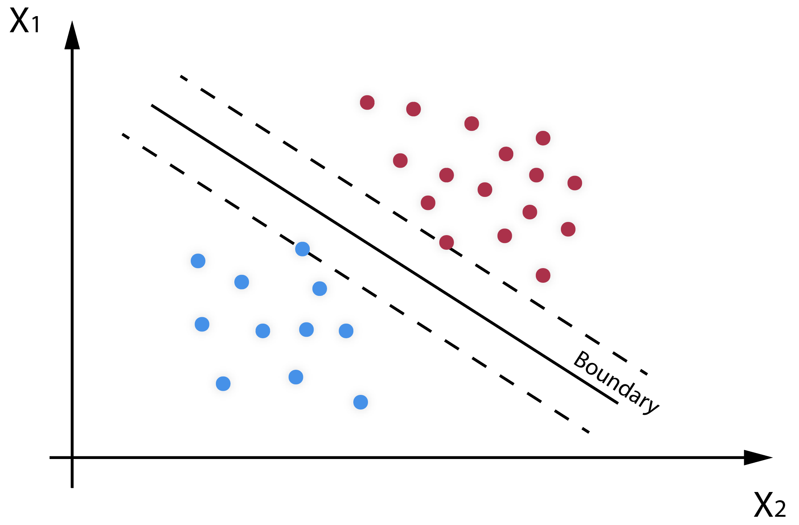
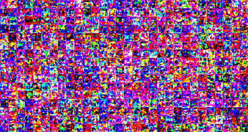
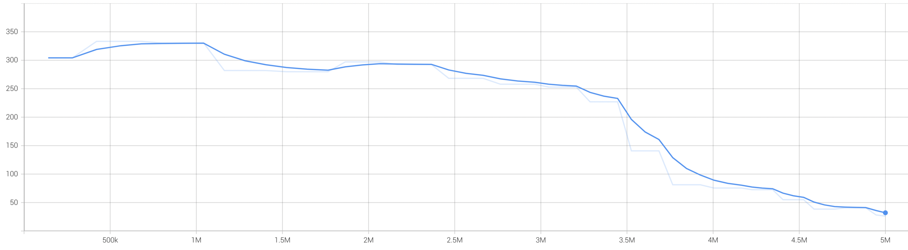
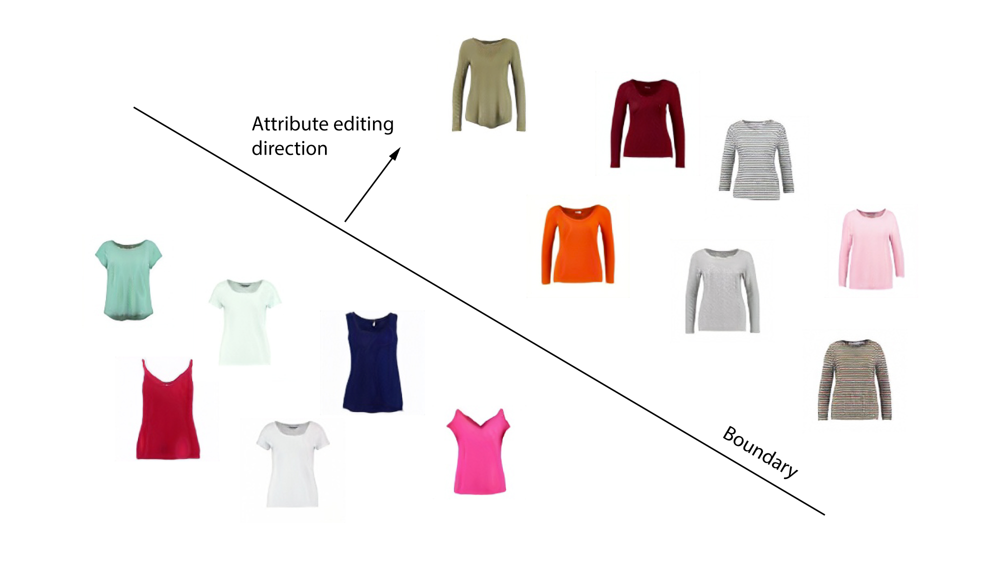
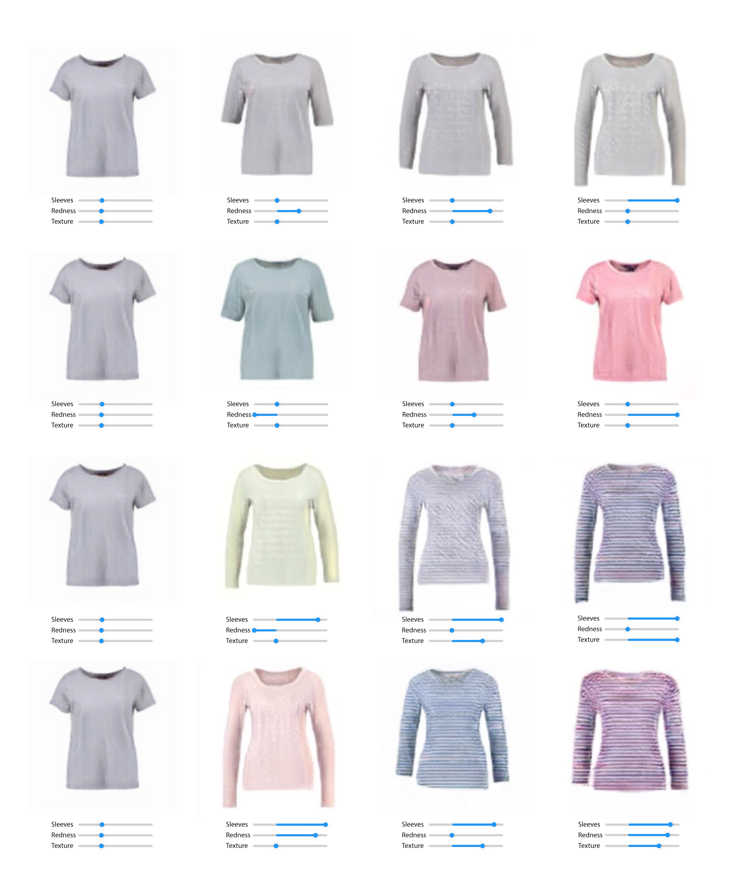
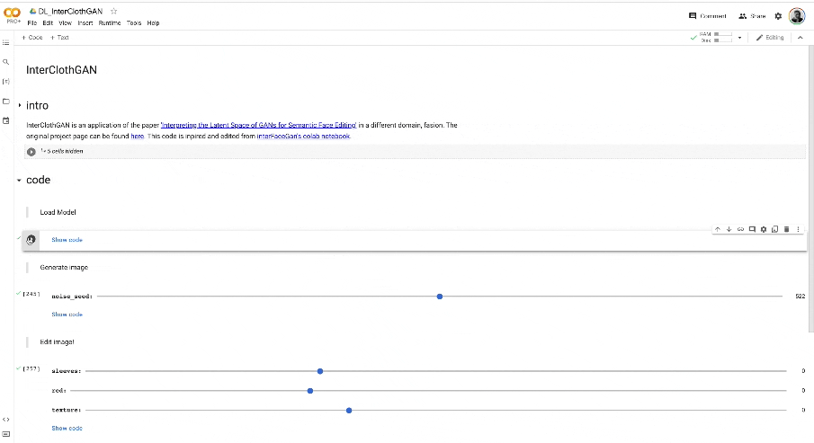

InterClothesGAN
Final Project
CMU 16-726 Image Synthesis S22
Tomas Cabezon Pedroso

In this project, we will explore the possibilities of interpreting the latent semantics learned by GANs for garment editing. This work is inspired by the paper 'Interpreting the Latent Space of GANs for Semantic Face Editing' and its final objective is to find other domains in which to apply this study. The project is divided into two parts: the first part, consists on the trainning of a StyleGAN on the Viton dataset for its posterior analysis. In the second part, we will conduct a study of the diferent features encoded in the learned latent space to control of different garment features, such as, sleeve length or texture.
InterFaceGAN
Interpreting latent space
In the InterFaceGAN paper, the authors show how they found that:
According to Property 1, the linear interpolation between z1 and z2 forms a direction in Z, which further defines a hyperplane. We therefore make an assumption that for any binary semantic, there exists a hyperplane in the latent space serving as the separation boundary. Semantic remains the same when the latent code walks within the same side of the hyperplane yet turns into the opposite when across the boundary"

StyleGAN
In this firt part, a StyleGAN is trained to later perform the latent space study. Nvidia's StyleGan is used to train this GAN on the Viton dataset, composed of is used 14.221 images of different top garments.

In the following images the losses of the training of our model can be seen. We kept track of the FID50k score during training, receiving a final score of 26.11. The scores given by the discriminator to the real images, as well as, the scores of fake images get closer to the absolute value of 0.5, showing that during training the model improves.

Loss/scores of real images.
Loss/scores of fake images.
Boundaries
Once we have a well trained GAN we procede to explore the disentaglement of the different
features. We used the previously explained SVM to find the hyperplanes that separete the boundaries
and get the normal vectors to this hyperplanes as the feature editing directions.
To manipulate/tweak any attribute, we edit the
original latent code z as:
where α is the parameter that shifts z on the editing direction
n, which the unit vector normal to the boundary hyperplane. In the following
image is a diagram of how the sleeve length editing direction was found. Apart from this feature, we
also found the direction to edit the texture of the garment as well as the redness of it.

Examples used to find the sleeve length boundary in the latent space.
Results
A garment generated by the StyleGAN generator can be tweaked using the found editing directions allowing the user to explore the design space.

On the left, original image without editing. The columns to the right, corresponding results after applying the changes.
Demo
Bellow, a demo of the possible interaction between the user and the proposed InterClothGAN is shown.

Demo of the InterClothesGAN.